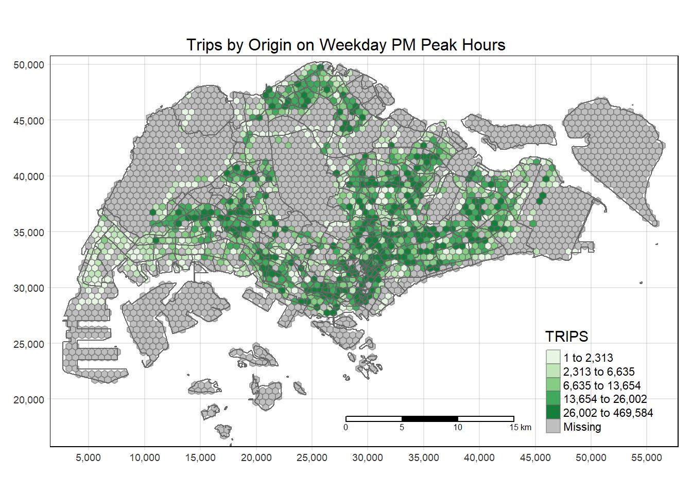
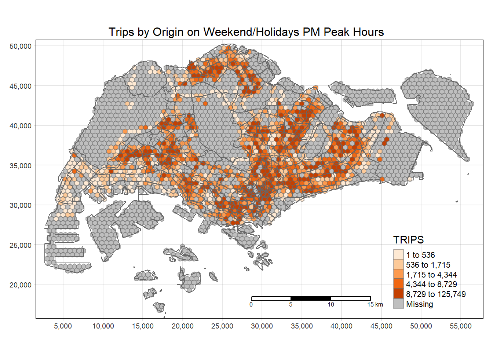
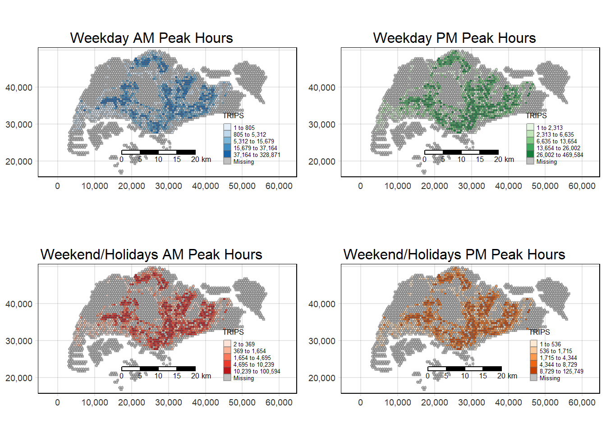
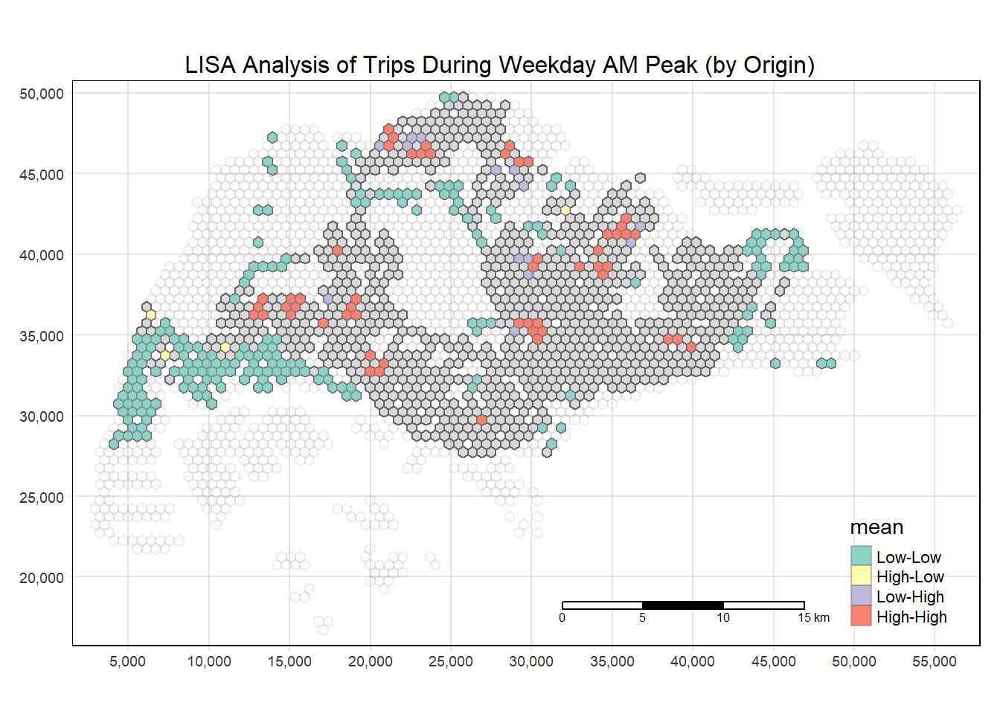
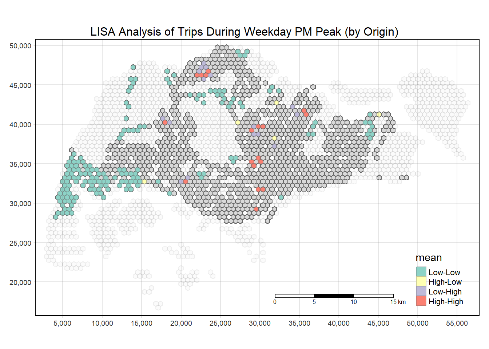
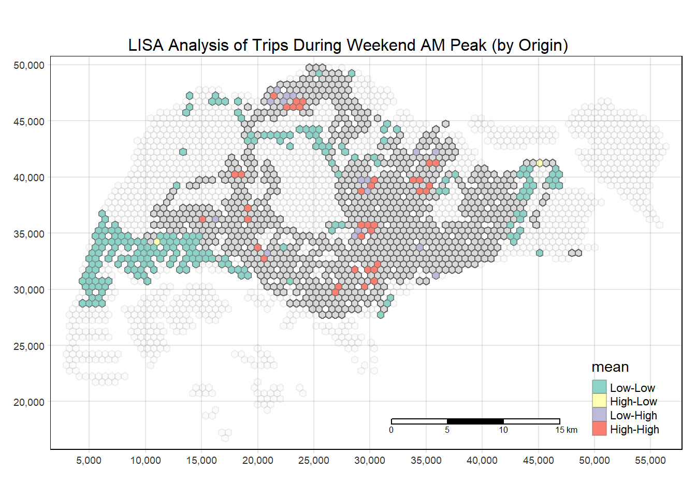
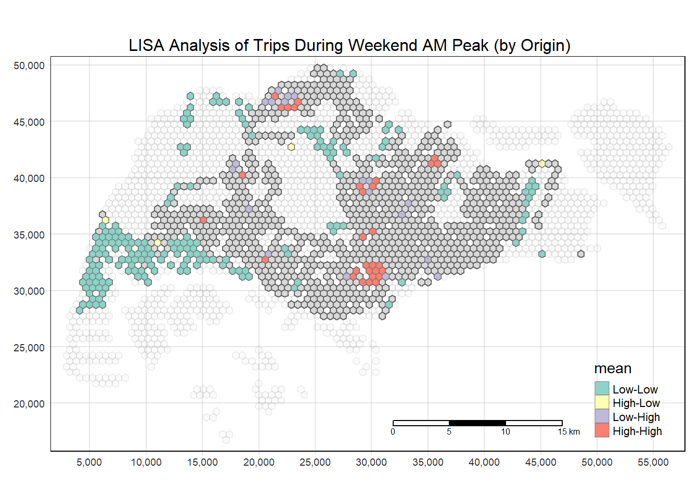
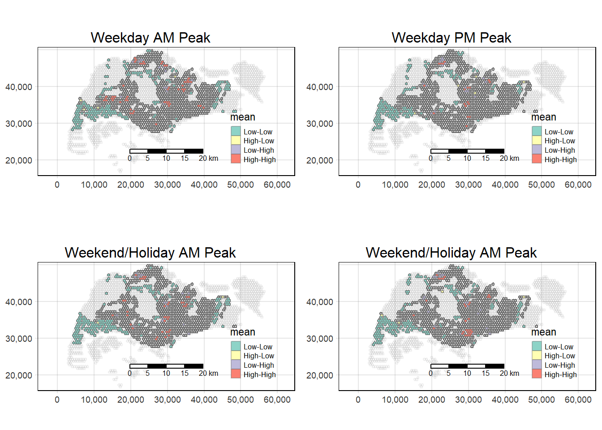

pacman::p_load(sf, tmap, sfdep, tidyverse, knitr)Take-home Exercise 1
1. Overview
In this take-home exercise, we will examine the spatial and spatio-temporal mobility patterns of public bus passengers in Singapore. Exploratory Spatial Data Analysis (ESDA) will be used to visualise and analyse bus ridership data by origin in October 2023. Next, Local Indicators of Spatial Association analysis will be conducted to uncover spatial and spatio-temporal mobility patterns of bus passengers in Singapore.
2. The Data
We will use the following data sets for this exercise:
| S/N | Name of Data Set | File type | Source | Extracted to (file directory) |
|---|---|---|---|---|
| 1 | Master Plan 2019 Subzone Boundary (Web) | SHP | data.gov.sg | /data/geospatial |
| 2 | Bus Stop Location | SHP | LTA DataMall | /data/geospatial |
| 3 | Passenger Volume by Origin Destination Bus Stops | csv | LTA DataMall | /data/aspatial |
2.1. Loading Relevant R Packages
We will first load the following packages into R using the following code:
These packages will serve the following purpose:
sf: geospatial data handlingtmap: thematic mappingsfdep: to compute spatial weights and local spatial association statisticstidyverse: non-spatial data handlingknitr: for creating html table
2.2. Loading and Checking Data Sets
The first data set we will import is the origin_destination_bus_202310 csv data. We will import it into R as odbus using read_csv() from the readr package:
odbus <- read_csv("data/aspatial/origin_destination_bus_202310.csv")
glimpse(odbus)Rows: 5,694,297
Columns: 7
$ YEAR_MONTH <chr> "2023-10", "2023-10", "2023-10", "2023-10", "2023-…
$ DAY_TYPE <chr> "WEEKENDS/HOLIDAY", "WEEKDAY", "WEEKENDS/HOLIDAY",…
$ TIME_PER_HOUR <dbl> 16, 16, 14, 14, 17, 17, 17, 7, 14, 14, 10, 20, 20,…
$ PT_TYPE <chr> "BUS", "BUS", "BUS", "BUS", "BUS", "BUS", "BUS", "…
$ ORIGIN_PT_CODE <chr> "04168", "04168", "80119", "80119", "44069", "2028…
$ DESTINATION_PT_CODE <chr> "10051", "10051", "90079", "90079", "17229", "2014…
$ TOTAL_TRIPS <dbl> 3, 5, 3, 5, 4, 1, 24, 2, 1, 7, 3, 2, 5, 1, 1, 1, 1…Note: use
read_csv()from thereadrpackage, which is part of the coretidyverse, instead ofread.csv()from the R base package.read_csv()is typically faster, produces tibble tables and are more reproducible1.
It is observed that ORIGIN_PT_CODE and DESTINATION_PT_CODE are both recognised as integers. Since these are bus stop identifiers, they should be converted to factor type using the following code:
odbus$ORIGIN_PT_CODE <-
as.factor(odbus$ORIGIN_PT_CODE)
odbus$DESTINATION_PT_CODE <-
as.factor(odbus$DESTINATION_PT_CODE)
glimpse(odbus)Rows: 5,694,297
Columns: 7
$ YEAR_MONTH <chr> "2023-10", "2023-10", "2023-10", "2023-10", "2023-…
$ DAY_TYPE <chr> "WEEKENDS/HOLIDAY", "WEEKDAY", "WEEKENDS/HOLIDAY",…
$ TIME_PER_HOUR <dbl> 16, 16, 14, 14, 17, 17, 17, 7, 14, 14, 10, 20, 20,…
$ PT_TYPE <chr> "BUS", "BUS", "BUS", "BUS", "BUS", "BUS", "BUS", "…
$ ORIGIN_PT_CODE <fct> 04168, 04168, 80119, 80119, 44069, 20281, 20281, 1…
$ DESTINATION_PT_CODE <fct> 10051, 10051, 90079, 90079, 17229, 20141, 20141, 1…
$ TOTAL_TRIPS <dbl> 3, 5, 3, 5, 4, 1, 24, 2, 1, 7, 3, 2, 5, 1, 1, 1, 1…The second dataset we will import is the BusStop SHP file. This file will be imported into R as busstop using the st_read() function from the sf package:
busstop <- st_read(dsn="data/geospatial",
layer = "BusStop") %>%
st_transform(crs = 3414)Reading layer `BusStop' from data source
`C:\Users\noel1\Documents\School\02. Special Sem 1\ISSS624 Geospatial Analysis\noelnomel\ISSS624\Take_home_Ex\Take_home_Ex01\data\geospatial'
using driver `ESRI Shapefile'
Simple feature collection with 5161 features and 3 fields
Geometry type: POINT
Dimension: XY
Bounding box: xmin: 3970.122 ymin: 26482.1 xmax: 48284.56 ymax: 52983.82
Projected CRS: SVY21glimpse(busstop)Rows: 5,161
Columns: 4
$ BUS_STOP_N <chr> "22069", "32071", "44331", "96081", "11561", "66191", "2338…
$ BUS_ROOF_N <chr> "B06", "B23", "B01", "B05", "B05", "B03", "B02A", "B02", "B…
$ LOC_DESC <chr> "OPP CEVA LOGISTICS", "AFT TRACK 13", "BLK 239", "GRACE IND…
$ geometry <POINT [m]> POINT (13576.31 32883.65), POINT (13228.59 44206.38),…
st_transformis used to project the coordinates of the simple feature onto the Singapore SVY21 coordinate system (EPSG:3414).
Lastly, we will import the Master Plan 2019 Subzone Boundary SHP file. This file will be imported into R as mpsz2019 using the st_read() function from the sf package:
mpsz2019 <- st_read(dsn="data/geospatial",
layer = "MPSZ-2019") %>%
st_transform(crs=3414)Reading layer `MPSZ-2019' from data source
`C:\Users\noel1\Documents\School\02. Special Sem 1\ISSS624 Geospatial Analysis\noelnomel\ISSS624\Take_home_Ex\Take_home_Ex01\data\geospatial'
using driver `ESRI Shapefile'
Simple feature collection with 332 features and 6 fields
Geometry type: MULTIPOLYGON
Dimension: XY
Bounding box: xmin: 103.6057 ymin: 1.158699 xmax: 104.0885 ymax: 1.470775
Geodetic CRS: WGS 84glimpse(mpsz2019)Rows: 332
Columns: 7
$ SUBZONE_N <chr> "MARINA EAST", "INSTITUTION HILL", "ROBERTSON QUAY", "JURON…
$ SUBZONE_C <chr> "MESZ01", "RVSZ05", "SRSZ01", "WISZ01", "MUSZ02", "MPSZ05",…
$ PLN_AREA_N <chr> "MARINA EAST", "RIVER VALLEY", "SINGAPORE RIVER", "WESTERN …
$ PLN_AREA_C <chr> "ME", "RV", "SR", "WI", "MU", "MP", "WI", "WI", "SI", "SI",…
$ REGION_N <chr> "CENTRAL REGION", "CENTRAL REGION", "CENTRAL REGION", "WEST…
$ REGION_C <chr> "CR", "CR", "CR", "WR", "CR", "CR", "WR", "WR", "CR", "CR",…
$ geometry <MULTIPOLYGON [m]> MULTIPOLYGON (((33222.98 29..., MULTIPOLYGON (…2.3. Extracting Study Data
In this exercise, we will focus on the bus ridership by origin bus stop in the following peak travel periods:
| Peak Period | Bus Tap-on Time |
|---|---|
| Weekday mornings | 06:00 to 09:00 |
| Weekday evenings | 17:00 to 20:00 |
| Weekend/holiday mornings | 11:00 to 14:00 |
| Weekend/holiday evenings | 16:00 to 19:00 |
We will extract each peak period separately using the following codes:
Weekday morning peak:
ori_WD_AM <- odbus %>%
filter(DAY_TYPE == 'WEEKDAY') %>%
filter(TIME_PER_HOUR >= 6 &
TIME_PER_HOUR <= 9) %>%
group_by(ORIGIN_PT_CODE) %>%
summarise(TRIPS = sum(TOTAL_TRIPS))
glimpse(ori_WD_AM)Rows: 5,029
Columns: 2
$ ORIGIN_PT_CODE <fct> 01012, 01013, 01019, 01029, 01039, 01059, 01109, 01112,…
$ TRIPS <dbl> 1770, 841, 1530, 2483, 2919, 1734, 200, 8593, 7749, 368…write_rds(ori_WD_AM, "data/rds/ori_WD_AM.rds")Weekday evening peak:
ori_WD_PM <- odbus %>%
filter(DAY_TYPE == 'WEEKDAY') %>%
filter(TIME_PER_HOUR >= 17 &
TIME_PER_HOUR <= 20) %>%
group_by(ORIGIN_PT_CODE) %>%
summarise(TRIPS = sum(TOTAL_TRIPS))
glimpse(ori_WD_PM)Rows: 5,039
Columns: 2
$ ORIGIN_PT_CODE <fct> 01012, 01013, 01019, 01029, 01039, 01059, 01109, 01112,…
$ TRIPS <dbl> 8000, 7038, 3398, 9089, 12095, 2212, 276, 43513, 25769,…write_rds(ori_WD_PM, "data/rds/ori_WD_PM.rds")Weekend/holiday morning peak:
ori_WE_AM <- odbus %>%
filter(DAY_TYPE == 'WEEKENDS/HOLIDAY') %>%
filter(TIME_PER_HOUR >= 11 &
TIME_PER_HOUR <= 14) %>%
group_by(ORIGIN_PT_CODE) %>%
summarise(TRIPS = sum(TOTAL_TRIPS))
glimpse(ori_WE_AM)Rows: 5,012
Columns: 2
$ ORIGIN_PT_CODE <fct> 01012, 01013, 01019, 01029, 01039, 01059, 01109, 01112,…
$ TRIPS <dbl> 2177, 1818, 1536, 3217, 5408, 1159, 116, 15354, 8805, 6…write_rds(ori_WE_AM, "data/rds/ori_WE_AM.rds")Weekend/holiday evening peak:
ori_WE_PM <- odbus %>%
filter(DAY_TYPE == 'WEEKENDS/HOLIDAY') %>%
filter(TIME_PER_HOUR >= 16 &
TIME_PER_HOUR <= 19) %>%
group_by(ORIGIN_PT_CODE) %>%
summarise(TRIPS = sum(TOTAL_TRIPS))
glimpse(ori_WE_PM)Rows: 4,992
Columns: 2
$ ORIGIN_PT_CODE <fct> 01012, 01013, 01019, 01029, 01039, 01059, 01109, 01112,…
$ TRIPS <dbl> 3061, 2770, 1685, 4063, 7263, 1118, 101, 21405, 11556, …write_rds(ori_WE_PM, "data/rds/ori_WE_PM.rds")3. Create Hexagon Layer of mpsz2019
Next, we will create a hexagon tessellation layer using mpsz2019. A hexagon layer is created to replace the irregular planning subzone polygons to reduce sampling bias2.
# calculate cellsize using perpendicular distance from center to edge of 250m
# update on 7 Dec 2023 after realising some calculation mistakes
# cell size = 2 x edge length (since regular hexagons are made of equilateral triangles)
# apothem = perpendicular distance from center to any edge
# edge length = (2 x apothem) / sqrt(3)
# cell size = (4 x apothem) / sqrt(3)
cs <- (4 * 250) / sqrt(3)
# make hexagonal tesellation and add grid ID
mpsz2019_grid <- st_make_grid(mpsz2019, c(cs,cs), square = FALSE) %>%
st_sf() %>%
mutate(id = row_number())
mpsz2019_grid$id <- as.factor(mpsz2019_grid$id)
# determine centroid for each hexagon
cent <- st_centroid(mpsz2019_grid)
# determine the intersection of centroids with mpsz2019
mpsz2019_map <- st_intersection(cent, mpsz2019)
cent_no_geom <- st_drop_geometry(mpsz2019_map)
# create hexagon layer, drop_na() to suppress cells outside the country
hexagon <- left_join(mpsz2019_grid, cent_no_geom) %>%
drop_na()
qtm(hexagon)4. Geospatial Visualisation of Passenger Trips by Origin
4.1. Geospatial Data Wrangling
4.1.1. Weekday AM Peak Hours (by Origin)
Firstly, we perform a left_join() using busstop and ori_WD_AM to populate trips by origin bus stop to the full list of bus stops in Singapore. This generates NA values for bus stops where no origin trips were taken during weekday morning peak periods in October 2023. This retains the simple feature dataframe for the next step.
bs_ori_WD_AM <- left_join(busstop, ori_WD_AM,
by = c('BUS_STOP_N' = 'ORIGIN_PT_CODE'))
head(bs_ori_WD_AM)Simple feature collection with 6 features and 4 fields
Geometry type: POINT
Dimension: XY
Bounding box: xmin: 13228.59 ymin: 30391.85 xmax: 41603.76 ymax: 44206.38
Projected CRS: SVY21 / Singapore TM
BUS_STOP_N BUS_ROOF_N LOC_DESC TRIPS geometry
1 22069 B06 OPP CEVA LOGISTICS 50 POINT (13576.31 32883.65)
2 32071 B23 AFT TRACK 13 NA POINT (13228.59 44206.38)
3 44331 B01 BLK 239 2075 POINT (21045.1 40242.08)
4 96081 B05 GRACE INDEPENDENT CH 411 POINT (41603.76 35413.11)
5 11561 B05 BLK 166 207 POINT (24568.74 30391.85)
6 66191 B03 AFT CORFE PL 405 POINT (30951.58 38079.61)Next, we use st_join from the sf package to perform a spatial left join between the hexagon layer and the bs_ori_WD_AM simple feature dataframe. Bus stop coordinates that intersect with each hexagon polygon will be assigned the corresponding grid id.
WD_AM_map <- st_join(hexagon, bs_ori_WD_AM) %>%
select(id, BUS_STOP_N, TRIPS, geometry)
glimpse(WD_AM_map)Rows: 6,620
Columns: 4
$ id <fct> 78, 79, 113, 114, 115, 116, 117, 118, 148, 149, 150, 151, 1…
$ BUS_STOP_N <chr> NA, NA, NA, NA, NA, NA, NA, NA, NA, NA, NA, NA, NA, NA, NA,…
$ TRIPS <dbl> NA, NA, NA, NA, NA, NA, NA, NA, NA, NA, NA, NA, NA, NA, NA,…
$ geometry <POLYGON [m]> POLYGON ((2956.213 22915.39..., POLYGON ((2956.213 …Next, we check for duplicates in the resultant simple feature dataframe:
duplicates <- WD_AM_map %>%
group_by_all() %>%
filter(n() > 1) %>%
ungroup()
head(duplicates, 20)Simple feature collection with 20 features and 3 fields
Geometry type: POLYGON
Dimension: XY
Bounding box: xmin: 13348.52 ymin: 32415.39 xmax: 44525.43 ymax: 48082.05
Projected CRS: SVY21 / Singapore TM
# A tibble: 20 × 4
id BUS_STOP_N TRIPS geometry
<fct> <chr> <dbl> <POLYGON [m]>
1 1386 22501 11384 ((13637.19 35415.39, 13348.52 35582.05, 13348.52 3591…
2 1386 22501 11384 ((13637.19 35415.39, 13348.52 35582.05, 13348.52 3591…
3 2017 43709 1329 ((18833.35 36415.39, 18544.67 36582.05, 18544.67 3691…
4 2017 43709 1329 ((18833.35 36415.39, 18544.67 36582.05, 18544.67 3691…
5 2503 11009 17311 ((22874.8 32415.39, 22586.12 32582.05, 22586.12 32915…
6 2503 11009 17311 ((22874.8 32415.39, 22586.12 32582.05, 22586.12 32915…
7 2518 47201 25910 ((22874.8 47415.39, 22586.12 47582.05, 22586.12 47915…
8 2518 47201 25910 ((22874.8 47415.39, 22586.12 47582.05, 22586.12 47915…
9 3171 51071 6698 ((28359.62 35915.39, 28070.95 36082.05, 28070.95 3641…
10 3171 51071 6698 ((28359.62 35915.39, 28070.95 36082.05, 28070.95 3641…
11 3947 67421 258 ((34710.48 41915.39, 34421.8 42082.05, 34421.8 42415.…
12 3947 67421 258 ((34710.48 41915.39, 34421.8 42082.05, 34421.8 42415.…
13 4008 82221 3998 ((35287.83 32915.39, 34999.15 33082.05, 34999.15 3341…
14 4008 82221 3998 ((35287.83 32915.39, 34999.15 33082.05, 34999.15 3341…
15 4050 62251 8605 ((35576.5 39415.39, 35287.83 39582.05, 35287.83 39915…
16 4050 62251 8605 ((35576.5 39415.39, 35287.83 39582.05, 35287.83 39915…
17 4850 96319 675 ((42216.03 34915.39, 41927.36 35082.05, 41927.36 3541…
18 4850 96319 675 ((42216.03 34915.39, 41927.36 35082.05, 41927.36 3541…
19 5099 97079 3822 ((44236.76 38415.39, 43948.08 38582.05, 43948.08 3891…
20 5099 97079 3822 ((44236.76 38415.39, 43948.08 38582.05, 43948.08 3891…First, using glimpse() we know that there are 20 duplicate records. We will use head() to display all 20 records to conduct a visual check.
Next, we will remove the duplicate values:
WD_AM_map <- unique(WD_AM_map)
glimpse(WD_AM_map)Rows: 6,610
Columns: 4
$ id <fct> 78, 79, 113, 114, 115, 116, 117, 118, 148, 149, 150, 151, 1…
$ BUS_STOP_N <chr> NA, NA, NA, NA, NA, NA, NA, NA, NA, NA, NA, NA, NA, NA, NA,…
$ TRIPS <dbl> NA, NA, NA, NA, NA, NA, NA, NA, NA, NA, NA, NA, NA, NA, NA,…
$ geometry <POLYGON [m]> POLYGON ((2956.213 22915.39..., POLYGON ((2956.213 …We will now check for the occurrence of multiple bus stops with the same hexagon grid:
by_id <- WD_AM_map %>%
group_by(id) %>%
filter(n() > 1) %>%
ungroup()
glimpse(by_id)Rows: 5,015
Columns: 4
$ id <fct> 295, 295, 295, 331, 331, 365, 365, 365, 366, 366, 367, 367,…
$ BUS_STOP_N <chr> "25719", "25711", "26389", "25701", "25709", "26409", "2639…
$ TRIPS <dbl> 815, 251, 301, 274, 760, 32, 257, 2, 71, 1819, 9, 26, 152, …
$ geometry <POLYGON [m]> POLYGON ((4688.264 29915.39..., POLYGON ((4688.264 …It is observed that there are 4,931 records of such occurrences. We will sum all origin trips by each hexagon grid using the following code:
WD_AM_map <- WD_AM_map %>%
group_by(id) %>%
summarise(TRIPS = sum(TRIPS))
glimpse(WD_AM_map)Rows: 2,711
Columns: 3
$ id <fct> 78, 79, 113, 114, 115, 116, 117, 118, 148, 149, 150, 151, 152…
$ TRIPS <dbl> NA, NA, NA, NA, NA, NA, NA, NA, NA, NA, NA, NA, NA, NA, NA, N…
$ geometry <POLYGON [m]> POLYGON ((2956.213 22915.39..., POLYGON ((2956.213 23…We repeat the above data wrangling steps for the remaining three study datasets:
4.1.2. Weekday PM Peak Hours (by Origin)
bs_ori_WD_PM <- left_join(busstop, ori_WD_PM,
by = c('BUS_STOP_N' = 'ORIGIN_PT_CODE'))
glimpse(bs_ori_WD_PM)Rows: 5,161
Columns: 5
$ BUS_STOP_N <chr> "22069", "32071", "44331", "96081", "11561", "66191", "2338…
$ BUS_ROOF_N <chr> "B06", "B23", "B01", "B05", "B05", "B03", "B02A", "B02", "B…
$ LOC_DESC <chr> "OPP CEVA LOGISTICS", "AFT TRACK 13", "BLK 239", "GRACE IND…
$ TRIPS <dbl> 67, 5, 1740, 445, 199, 349, 432, 1285, 3653, 1379, 181, 536…
$ geometry <POINT [m]> POINT (13576.31 32883.65), POINT (13228.59 44206.38),…WD_PM_map <- st_join(hexagon, bs_ori_WD_PM) %>%
select(id, BUS_STOP_N, TRIPS, geometry)
glimpse(WD_PM_map)Rows: 6,620
Columns: 4
$ id <fct> 78, 79, 113, 114, 115, 116, 117, 118, 148, 149, 150, 151, 1…
$ BUS_STOP_N <chr> NA, NA, NA, NA, NA, NA, NA, NA, NA, NA, NA, NA, NA, NA, NA,…
$ TRIPS <dbl> NA, NA, NA, NA, NA, NA, NA, NA, NA, NA, NA, NA, NA, NA, NA,…
$ geometry <POLYGON [m]> POLYGON ((2956.213 22915.39..., POLYGON ((2956.213 …duplicates <- WD_PM_map %>%
group_by_all() %>%
filter(n() > 1) %>%
ungroup()
head(duplicates, 20)Simple feature collection with 20 features and 3 fields
Geometry type: POLYGON
Dimension: XY
Bounding box: xmin: 13348.52 ymin: 32415.39 xmax: 44525.43 ymax: 48082.05
Projected CRS: SVY21 / Singapore TM
# A tibble: 20 × 4
id BUS_STOP_N TRIPS geometry
<fct> <chr> <dbl> <POLYGON [m]>
1 1386 22501 2533 ((13637.19 35415.39, 13348.52 35582.05, 13348.52 3591…
2 1386 22501 2533 ((13637.19 35415.39, 13348.52 35582.05, 13348.52 3591…
3 2017 43709 1608 ((18833.35 36415.39, 18544.67 36582.05, 18544.67 3691…
4 2017 43709 1608 ((18833.35 36415.39, 18544.67 36582.05, 18544.67 3691…
5 2503 11009 6229 ((22874.8 32415.39, 22586.12 32582.05, 22586.12 32915…
6 2503 11009 6229 ((22874.8 32415.39, 22586.12 32582.05, 22586.12 32915…
7 2518 47201 15689 ((22874.8 47415.39, 22586.12 47582.05, 22586.12 47915…
8 2518 47201 15689 ((22874.8 47415.39, 22586.12 47582.05, 22586.12 47915…
9 3171 51071 14145 ((28359.62 35915.39, 28070.95 36082.05, 28070.95 3641…
10 3171 51071 14145 ((28359.62 35915.39, 28070.95 36082.05, 28070.95 3641…
11 3947 67421 297 ((34710.48 41915.39, 34421.8 42082.05, 34421.8 42415.…
12 3947 67421 297 ((34710.48 41915.39, 34421.8 42082.05, 34421.8 42415.…
13 4008 82221 2871 ((35287.83 32915.39, 34999.15 33082.05, 34999.15 3341…
14 4008 82221 2871 ((35287.83 32915.39, 34999.15 33082.05, 34999.15 3341…
15 4050 62251 1874 ((35576.5 39415.39, 35287.83 39582.05, 35287.83 39915…
16 4050 62251 1874 ((35576.5 39415.39, 35287.83 39582.05, 35287.83 39915…
17 4850 96319 2996 ((42216.03 34915.39, 41927.36 35082.05, 41927.36 3541…
18 4850 96319 2996 ((42216.03 34915.39, 41927.36 35082.05, 41927.36 3541…
19 5099 97079 1980 ((44236.76 38415.39, 43948.08 38582.05, 43948.08 3891…
20 5099 97079 1980 ((44236.76 38415.39, 43948.08 38582.05, 43948.08 3891…WD_PM_map <- unique(WD_PM_map)
glimpse(WD_PM_map)Rows: 6,610
Columns: 4
$ id <fct> 78, 79, 113, 114, 115, 116, 117, 118, 148, 149, 150, 151, 1…
$ BUS_STOP_N <chr> NA, NA, NA, NA, NA, NA, NA, NA, NA, NA, NA, NA, NA, NA, NA,…
$ TRIPS <dbl> NA, NA, NA, NA, NA, NA, NA, NA, NA, NA, NA, NA, NA, NA, NA,…
$ geometry <POLYGON [m]> POLYGON ((2956.213 22915.39..., POLYGON ((2956.213 …by_id <- WD_PM_map %>%
group_by(id) %>%
filter(n() > 1) %>%
ungroup()
glimpse(by_id)Rows: 5,015
Columns: 4
$ id <fct> 295, 295, 295, 331, 331, 365, 365, 365, 366, 366, 367, 367,…
$ BUS_STOP_N <chr> "25719", "25711", "26389", "25701", "25709", "26409", "2639…
$ TRIPS <dbl> 2600, 297, 299, 335, 2137, 156, 560, 84, 1258, 1588, 39, 14…
$ geometry <POLYGON [m]> POLYGON ((4688.264 29915.39..., POLYGON ((4688.264 …WD_PM_map <- WD_PM_map %>%
group_by(id) %>%
summarise(TRIPS = sum(TRIPS))
glimpse(WD_PM_map)Rows: 2,711
Columns: 3
$ id <fct> 78, 79, 113, 114, 115, 116, 117, 118, 148, 149, 150, 151, 152…
$ TRIPS <dbl> NA, NA, NA, NA, NA, NA, NA, NA, NA, NA, NA, NA, NA, NA, NA, N…
$ geometry <POLYGON [m]> POLYGON ((2956.213 22915.39..., POLYGON ((2956.213 23…4.1.3. Weekend/Holiday AM Peak Hours (by Origin)
bs_ori_WE_AM <- left_join(busstop, ori_WE_AM,
by = c('BUS_STOP_N' = 'ORIGIN_PT_CODE'))
glimpse(bs_ori_WE_AM)Rows: 5,161
Columns: 5
$ BUS_STOP_N <chr> "22069", "32071", "44331", "96081", "11561", "66191", "2338…
$ BUS_ROOF_N <chr> "B06", "B23", "B01", "B05", "B05", "B03", "B02A", "B02", "B…
$ LOC_DESC <chr> "OPP CEVA LOGISTICS", "AFT TRACK 13", "BLK 239", "GRACE IND…
$ TRIPS <dbl> 8, NA, 682, 110, 70, 177, 16, 1442, 2042, 920, 7, 2375, 56,…
$ geometry <POINT [m]> POINT (13576.31 32883.65), POINT (13228.59 44206.38),…WE_AM_map <- st_join(hexagon, bs_ori_WE_AM) %>%
select(id, BUS_STOP_N, TRIPS, geometry)
glimpse(WE_AM_map)Rows: 6,620
Columns: 4
$ id <fct> 78, 79, 113, 114, 115, 116, 117, 118, 148, 149, 150, 151, 1…
$ BUS_STOP_N <chr> NA, NA, NA, NA, NA, NA, NA, NA, NA, NA, NA, NA, NA, NA, NA,…
$ TRIPS <dbl> NA, NA, NA, NA, NA, NA, NA, NA, NA, NA, NA, NA, NA, NA, NA,…
$ geometry <POLYGON [m]> POLYGON ((2956.213 22915.39..., POLYGON ((2956.213 …duplicates <- WE_AM_map %>%
group_by_all() %>%
filter(n() > 1) %>%
ungroup()
head(duplicates, 20)Simple feature collection with 20 features and 3 fields
Geometry type: POLYGON
Dimension: XY
Bounding box: xmin: 13348.52 ymin: 32415.39 xmax: 44525.43 ymax: 48082.05
Projected CRS: SVY21 / Singapore TM
# A tibble: 20 × 4
id BUS_STOP_N TRIPS geometry
<fct> <chr> <dbl> <POLYGON [m]>
1 1386 22501 1539 ((13637.19 35415.39, 13348.52 35582.05, 13348.52 3591…
2 1386 22501 1539 ((13637.19 35415.39, 13348.52 35582.05, 13348.52 3591…
3 2017 43709 415 ((18833.35 36415.39, 18544.67 36582.05, 18544.67 3691…
4 2017 43709 415 ((18833.35 36415.39, 18544.67 36582.05, 18544.67 3691…
5 2503 11009 4698 ((22874.8 32415.39, 22586.12 32582.05, 22586.12 32915…
6 2503 11009 4698 ((22874.8 32415.39, 22586.12 32582.05, 22586.12 32915…
7 2518 47201 2204 ((22874.8 47415.39, 22586.12 47582.05, 22586.12 47915…
8 2518 47201 2204 ((22874.8 47415.39, 22586.12 47582.05, 22586.12 47915…
9 3171 51071 5163 ((28359.62 35915.39, 28070.95 36082.05, 28070.95 3641…
10 3171 51071 5163 ((28359.62 35915.39, 28070.95 36082.05, 28070.95 3641…
11 3947 67421 91 ((34710.48 41915.39, 34421.8 42082.05, 34421.8 42415.…
12 3947 67421 91 ((34710.48 41915.39, 34421.8 42082.05, 34421.8 42415.…
13 4008 82221 2249 ((35287.83 32915.39, 34999.15 33082.05, 34999.15 3341…
14 4008 82221 2249 ((35287.83 32915.39, 34999.15 33082.05, 34999.15 3341…
15 4050 62251 1431 ((35576.5 39415.39, 35287.83 39582.05, 35287.83 39915…
16 4050 62251 1431 ((35576.5 39415.39, 35287.83 39582.05, 35287.83 39915…
17 4850 96319 164 ((42216.03 34915.39, 41927.36 35082.05, 41927.36 3541…
18 4850 96319 164 ((42216.03 34915.39, 41927.36 35082.05, 41927.36 3541…
19 5099 97079 290 ((44236.76 38415.39, 43948.08 38582.05, 43948.08 3891…
20 5099 97079 290 ((44236.76 38415.39, 43948.08 38582.05, 43948.08 3891…WE_AM_map <- unique(WE_AM_map)
glimpse(WE_AM_map)Rows: 6,610
Columns: 4
$ id <fct> 78, 79, 113, 114, 115, 116, 117, 118, 148, 149, 150, 151, 1…
$ BUS_STOP_N <chr> NA, NA, NA, NA, NA, NA, NA, NA, NA, NA, NA, NA, NA, NA, NA,…
$ TRIPS <dbl> NA, NA, NA, NA, NA, NA, NA, NA, NA, NA, NA, NA, NA, NA, NA,…
$ geometry <POLYGON [m]> POLYGON ((2956.213 22915.39..., POLYGON ((2956.213 …by_id <- WE_AM_map %>%
group_by(id) %>%
filter(n() > 1) %>%
ungroup()
glimpse(by_id)Rows: 5,015
Columns: 4
$ id <fct> 295, 295, 295, 331, 331, 365, 365, 365, 366, 366, 367, 367,…
$ BUS_STOP_N <chr> "25719", "25711", "26389", "25701", "25709", "26409", "2639…
$ TRIPS <dbl> 367, 39, 88, 103, 588, 12, 49, 7, 148, 1066, 5, 15, 181, 4,…
$ geometry <POLYGON [m]> POLYGON ((4688.264 29915.39..., POLYGON ((4688.264 …WE_AM_map <- WE_AM_map %>%
group_by(id) %>%
summarise(TRIPS = sum(TRIPS))
glimpse(WE_AM_map)Rows: 2,711
Columns: 3
$ id <fct> 78, 79, 113, 114, 115, 116, 117, 118, 148, 149, 150, 151, 152…
$ TRIPS <dbl> NA, NA, NA, NA, NA, NA, NA, NA, NA, NA, NA, NA, NA, NA, NA, N…
$ geometry <POLYGON [m]> POLYGON ((2956.213 22915.39..., POLYGON ((2956.213 23…4.1.4. Weekend/Holiday PM Peak Hours (by Origin)
bs_ori_WE_PM <- left_join(busstop, ori_WE_PM,
by = c('BUS_STOP_N' = 'ORIGIN_PT_CODE'))
glimpse(bs_ori_WE_PM)Rows: 5,161
Columns: 5
$ BUS_STOP_N <chr> "22069", "32071", "44331", "96081", "11561", "66191", "2338…
$ BUS_ROOF_N <chr> "B06", "B23", "B01", "B05", "B05", "B03", "B02A", "B02", "B…
$ LOC_DESC <chr> "OPP CEVA LOGISTICS", "AFT TRACK 13", "BLK 239", "GRACE IND…
$ TRIPS <dbl> 10, NA, 589, 47, 77, 169, 82, 492, 2016, 724, 25, 2137, 91,…
$ geometry <POINT [m]> POINT (13576.31 32883.65), POINT (13228.59 44206.38),…WE_PM_map <- st_join(hexagon, bs_ori_WE_PM) %>%
select(id, BUS_STOP_N, TRIPS, geometry)
glimpse(WE_PM_map)Rows: 6,620
Columns: 4
$ id <fct> 78, 79, 113, 114, 115, 116, 117, 118, 148, 149, 150, 151, 1…
$ BUS_STOP_N <chr> NA, NA, NA, NA, NA, NA, NA, NA, NA, NA, NA, NA, NA, NA, NA,…
$ TRIPS <dbl> NA, NA, NA, NA, NA, NA, NA, NA, NA, NA, NA, NA, NA, NA, NA,…
$ geometry <POLYGON [m]> POLYGON ((2956.213 22915.39..., POLYGON ((2956.213 …duplicates <- WE_PM_map %>%
group_by_all() %>%
filter(n() > 1) %>%
ungroup()
glimpse(duplicates)Rows: 20
Columns: 4
$ id <fct> 1386, 1386, 2017, 2017, 2503, 2503, 2518, 2518, 3171, 3171,…
$ BUS_STOP_N <chr> "22501", "22501", "43709", "43709", "11009", "11009", "4720…
$ TRIPS <dbl> 1315, 1315, 452, 452, 2451, 2451, 6331, 6331, 4450, 4450, 6…
$ geometry <POLYGON [m]> POLYGON ((13637.19 35415.39..., POLYGON ((13637.19 …WE_PM_map <- unique(WE_PM_map)
glimpse(WE_PM_map)Rows: 6,610
Columns: 4
$ id <fct> 78, 79, 113, 114, 115, 116, 117, 118, 148, 149, 150, 151, 1…
$ BUS_STOP_N <chr> NA, NA, NA, NA, NA, NA, NA, NA, NA, NA, NA, NA, NA, NA, NA,…
$ TRIPS <dbl> NA, NA, NA, NA, NA, NA, NA, NA, NA, NA, NA, NA, NA, NA, NA,…
$ geometry <POLYGON [m]> POLYGON ((2956.213 22915.39..., POLYGON ((2956.213 …by_id <- WE_PM_map %>%
group_by(id) %>%
filter(n() > 1) %>%
ungroup()
glimpse(by_id)Rows: 5,015
Columns: 4
$ id <fct> 295, 295, 295, 331, 331, 365, 365, 365, 366, 366, 367, 367,…
$ BUS_STOP_N <chr> "25719", "25711", "26389", "25701", "25709", "26409", "2639…
$ TRIPS <dbl> 533, 132, 101, 297, 733, 34, 111, 19, 168, 1256, 10, 34, 34…
$ geometry <POLYGON [m]> POLYGON ((4688.264 29915.39..., POLYGON ((4688.264 …WE_PM_map <- WE_PM_map %>%
group_by(id) %>%
summarise(TRIPS = sum(TRIPS))
glimpse(WE_PM_map)Rows: 2,711
Columns: 3
$ id <fct> 78, 79, 113, 114, 115, 116, 117, 118, 148, 149, 150, 151, 152…
$ TRIPS <dbl> NA, NA, NA, NA, NA, NA, NA, NA, NA, NA, NA, NA, NA, NA, NA, N…
$ geometry <POLYGON [m]> POLYGON ((2956.213 22915.39..., POLYGON ((2956.213 23…4.2. Visualising Geographical Distribution of Passenger Trips
4.2.1. Weekday AM Peak Hours (by Origin)
tmap_mode("plot")
tm_shape(WD_AM_map) +
tm_fill("TRIPS",
style = "quantile",
palette = "Blues",
id = "TRIPS") +
tm_layout(main.title = "Trips by Origin on Weekday AM Peak Hours",
main.title.position = "center",
main.title.size = 1,) +
tm_borders(alpha = 0.5) +
tm_scale_bar() +
tm_grid(alpha = 0.2) +
tm_shape(mpsz2019) +
tm_polygons(alpha = 0) +
tm_borders(alpha = 0.1) By overlaying the mpsz2019 planning subzone polygons over the hexagon layer, we can obtain a clearer visualisation of where most of high ridership numbers originate from during morning peak period.
Most of the high trip numbers occur in hexagon grids that occur in residential areas such as Toh Guan, Redhill, and Hougang. In contrast, the lowest trip numbers are observed in the city and industrial areas such as Tuas, Lim Chu Kang, and Changi West. Interestingly, there are some residential areas with lower observed trip numbers such as Serangoon Garden and Holland Road. This could be due to the higher presence of landed property in these estates, which is likely correlated to higher likelihood of car ownership. It can also be observed that there is one hexagon grid next to the Tuas checkpoint that has high trips recorded.
4.2.2. Weekday PM Peak Hours (by Origin)
tmap_mode('plot')
tm_shape(WD_PM_map) +
tm_fill("TRIPS",
style = "quantile",
palette = "Greens",
id = "TRIPS") +
tm_layout(main.title = "Trips by Origin on Weekday PM Peak Hours",
main.title.position = "center",
main.title.size = 1,) +
tm_borders(alpha = 0.5) +
tm_scale_bar() +
tm_grid(alpha = 0.2) +
tm_shape(mpsz2019) +
tm_polygons(alpha = 0) +
tm_borders(alpha = 0.1) 
From the visualisation above, we can observe the highest trip numbers in the southern region of Singapore, where a cluster of dark green hexagons are seen. This falls within the Chinatown, City Hall and Bugis subzones, where many workplaces are located. Higher trip numbers originating from these areas are expected during PM peak hours as that is when most people end work. Bus trips originating from residential areas appear to be lower during this period. Interestingly, even though many workplaces can be found in Tuas, low bus trip numbers are recorded during Weekday evening peak periods. This could be due to the provision of company transport for employees working in Tuas.
4.2.3. Weekend/Holiday AM Peak Hours (by Origin)
tmap_mode("plot")
tm_shape(WE_AM_map) +
tm_fill("TRIPS",
style = "quantile",
palette = "Reds",
id = "TRIPS") +
tm_layout(main.title = "Trips by Origin on Weekend/Holidays AM Peak Hours",
main.title.position = "center",
main.title.size = 1,) +
tm_borders(alpha = 0.5) +
tm_scale_bar() +
tm_grid(alpha = 0.2) +
tm_shape(mpsz2019) +
tm_polygons(alpha = 0) +
tm_borders(alpha = 0.1) +
tm_grid(alpha = 0.2)From the visualisation, high trip numbers can be observed to be occuring throughout Singapore on Weekend/Holiday morning peak periods, except in the western region of Joo Koon and Tuas. Some individual hexagon points that recorded high bus trips occur at the Turf Club, Changi Point, and Changi Airport. Many of the high trip numbers are recorded in the city area around Chinatown, Raffles Place, and Dhoby Ghaut. Low bus trip numbers are recorded in areas such as Lim Chu Kang, one-north, and Xilin.
4.2.4. Weekend PM Peak Hours (by Origin)
tmap_mode("plot")
tm_shape(WE_PM_map) +
tm_fill("TRIPS",
style = "quantile",
palette = "Oranges",
id = "TRIPS") +
tm_layout(main.title = "Trips by Origin on Weekend/Holidays PM Peak Hours",
main.title.position = "center",
main.title.size = 1,) +
tm_borders(alpha = 0.5) +
tm_scale_bar() +
tm_grid(alpha = 0.2) +
tm_shape(mpsz2019) +
tm_polygons(alpha = 0) +
tm_borders(alpha = 0.05) 
From the visualisation, high trip numbers can be observed to be occuring at different areas in Singapore on Weekend/Holiday evening peak periods. The western region of Joo Koon and Tuas remains relatively quiet with generally low bus trips recorded. Some individual hexagon points that recorded high bus trips occur at the Turf Club, Central Water Catchment, Changi Point and Changi Airport. Many of the high trip numbers are clustered around the city area around Chinatown, Raffles Place, and Dhoby Ghaut. Low bus trip numbers are recorded in areas such as Lim Chu Kang, Kranji, one-north, and Xilin.
4.2.3. Comparison
Show the code
tmap_mode("plot")
WD_AM_plot <- tm_shape(WD_AM_map) +
tm_fill("TRIPS",
style = "quantile",
palette = "Blues",
id = "TRIPS") +
tm_layout(main.title = "Weekday AM Peak Hours",
main.title.position = "center",
main.title.size = 1,
legend.height = 0.45,
legend.width = 0.35,) +
tm_borders(alpha = 0.5) +
tm_scale_bar() +
tm_grid(alpha = 0.2)
WD_PM_plot <- tm_shape(WD_PM_map) +
tm_fill("TRIPS",
style = "quantile",
palette = "Greens",
id = "TRIPS") +
tm_layout(main.title = "Weekday PM Peak Hours",
main.title.position = "center",
main.title.size = 1,
legend.height = 0.45,
legend.width = 0.35,) +
tm_borders(alpha = 0.5) +
tm_scale_bar() +
tm_grid(alpha = 0.2)
WE_AM_plot <- tm_shape(WE_AM_map) +
tm_fill("TRIPS",
style = "quantile",
palette = "Reds",
id = "TRIPS") +
tm_layout(main.title = "Weekend/Holidays AM Peak Hours",
main.title.position = "center",
main.title.size = 1,
legend.height = 0.45,
legend.width = 0.35,) +
tm_borders(alpha = 0.5) +
tm_scale_bar() +
tm_grid(alpha = 0.2)
WE_PM_plot <- tm_shape(WE_PM_map) +
tm_fill("TRIPS",
style = "quantile",
palette = "Oranges",
id = "TRIPS") +
tm_layout(main.title = "Weekend/Holidays PM Peak Hours",
main.title.position = "center",
main.title.size = 1,
legend.height = 0.45,
legend.width = 0.35,) +
tm_borders(alpha = 0.5) +
tm_scale_bar() +
tm_grid(alpha = 0.2)
tmap_arrange(WD_AM_plot, WD_PM_plot,
WE_AM_plot, WE_PM_plot,
asp = 2, ncol = 2)
Plotting all four graphs together allows for easier comparison.
First, comparing weekday morning and weekday evening trips, it is observed the the much higher highest trip number (569,969) is recorded in the evening as compared to in the morning (327,930). On the western, northern, and north-eastern ends, we can see that there are more grids with a higher number of trips recorded in the morning than in the evening. In contrast, more trips are recorded in the evening in the southern and city areas than in the morning.
Next, comparing weekend morning and weekend evening trips, visually, the distribution looks rather similar.
Next, comparing weekday morning and weekend morning trips, more trips are observed to originate from the city area on weekends than on weekdays.
Lastly, comparing weekday evening and weekend evening trips, a slightly higher number of trips originating from the city area is observed on weekends than on weekdays. It also appears that slightly more trips originate from the eastern area of Singapore on weekends than on weekday evenings.
5. Local Indicators of Spatial Association (LISA) Analysis
Local Indicators of Spatial Association (LISA) evaluates the existence of clusters in the spatial arrangement of a given variable. We will apply the appropriate LISA methods to detect cluster and/or outlier from bus ridership by origin bus stop in Singapore.
5.1. Preparing Data
First, we will prepare the datasets to be used for LISA analysis. This is because the original dataset used for mapping contained NA values in order for all hexagon grids to be shown on the map. We will use drop_na() to remove the NA values from the datasets.
WD_AM_lisa <- WD_AM_map %>%
ungroup() %>%
drop_na()WD_PM_lisa <- WD_PM_map %>%
ungroup() %>%
drop_na()WE_AM_lisa <- WE_AM_map %>%
ungroup() %>%
drop_na()WE_PM_lisa <- WE_PM_map %>%
ungroup() %>%
drop_na()5.2. Visualising the Data
5.2.1. Weekday AM Peak Hours (by Origin)
Using the weekday morning peak period data as an example, we use qtm() to do a quick plot for visualisation purposes.
qtm(WD_AM_lisa)From the plot above, it is observed that there are many hexagon areas without neighbours after applying drop_na(). This is likely the same case with the remaining three datasets:
5.2.2. Weekday PM Peak Hours (by Origin)
qtm(WD_PM_lisa)5.2.3. Weekend AM Peak Hours (by Origin)
qtm(WE_AM_lisa)5.2.4. Weekend PM Peak Hours (by Origin)
qtm(WE_PM_lisa)5.3. Deriving Spatial Weights and Local Moran’s I
Based on the visualisations above, we will use inverse distance weights (IDW) method to derive the spatial weights for each dataset. IDW assumes that each measured point has a local influence that diminishes with distance. It gives greater weights to points closest to the prediction location, and the weights diminish as a function of distance3.
5.3.1. Weekday AM Peak Hours (by Origin)
WD_AM_idw <- WD_AM_lisa %>%
mutate(nb = st_knn(geometry, k=8),
wt = st_inverse_distance(nb, geometry,
scale = 1,
alpha = 1),
.before = 1)
WD_AM_idwSimple feature collection with 1119 features and 4 fields
Geometry type: POLYGON
Dimension: XY
Bounding box: xmin: 3822.239 ymin: 27415.39 xmax: 48855.56 ymax: 50082.05
Projected CRS: SVY21 / Singapore TM
# A tibble: 1,119 × 5
nb wt id TRIPS geometry
* <nb> <list> <fct> <dbl> <POLYGON [m]>
1 <int [8]> <dbl [8]> 223 103 ((4110.914 27915.39, 3822.239 28082.05, 3822…
2 <int [8]> <dbl [8]> 259 52 ((4399.589 28415.39, 4110.914 28582.05, 4110…
3 <int [8]> <dbl [8]> 261 78 ((4399.589 30415.39, 4110.914 30582.05, 4110…
4 <int [8]> <dbl [8]> 295 1367 ((4688.264 29915.39, 4399.589 30082.05, 4399…
5 <int [8]> <dbl [8]> 296 53 ((4688.264 30915.39, 4399.589 31082.05, 4399…
6 <int [8]> <dbl [8]> 329 185 ((4976.939 28415.39, 4688.264 28582.05, 4688…
7 <int [8]> <dbl [8]> 330 152 ((4976.939 29415.39, 4688.264 29582.05, 4688…
8 <int [8]> <dbl [8]> 331 1034 ((4976.939 30415.39, 4688.264 30582.05, 4688…
9 <int [8]> <dbl [8]> 332 60 ((4976.939 31415.39, 4688.264 31582.05, 4688…
10 <int [8]> <dbl [8]> 333 399 ((4976.939 32415.39, 4688.264 32582.05, 4688…
# ℹ 1,109 more rowsUsing IDW, we will compute Local Moran’s I on TRIPS based on 100 simulations for each study period. The code uses the local_moran() function from the sfdep package:
lisa_WD_AM <- WD_AM_idw %>%
mutate(local_moran = local_moran(TRIPS, nb, wt, nsim = 99),
.before = 1) %>%
unnest(local_moran)
lisa_WD_AMSimple feature collection with 1119 features and 16 fields
Geometry type: POLYGON
Dimension: XY
Bounding box: xmin: 3822.239 ymin: 27415.39 xmax: 48855.56 ymax: 50082.05
Projected CRS: SVY21 / Singapore TM
# A tibble: 1,119 × 17
ii eii var_ii z_ii p_ii p_ii_sim p_folded_sim skewness kurtosis
<dbl> <dbl> <dbl> <dbl> <dbl> <dbl> <dbl> <dbl> <dbl>
1 0.00300 8.49e-5 2.00e-6 2.06 0.0394 0.02 0.01 -0.951 0.666
2 0.00402 -3.30e-4 5.09e-6 1.93 0.0537 0.02 0.01 -0.938 0.774
3 0.00481 -3.71e-4 7.86e-6 1.85 0.0644 0.02 0.01 -1.08 2.44
4 0.00498 6.34e-4 4.55e-6 2.04 0.0417 0.02 0.01 -0.880 0.944
5 0.00532 -1.42e-4 7.83e-6 1.95 0.0511 0.02 0.01 -1.60 6.05
6 0.00474 -1.20e-4 4.39e-6 2.32 0.0204 0.02 0.01 -1.21 3.51
7 0.00498 -4.01e-4 6.38e-6 2.13 0.0332 0.02 0.01 -0.938 1.27
8 0.00585 6.12e-5 1.14e-5 1.71 0.0870 0.02 0.01 -1.65 3.62
9 0.00540 -3.28e-4 9.35e-6 1.87 0.0608 0.02 0.01 -1.03 1.34
10 0.00460 -1.15e-4 7.55e-6 1.71 0.0866 0.02 0.01 -0.906 1.13
# ℹ 1,109 more rows
# ℹ 8 more variables: mean <fct>, median <fct>, pysal <fct>, nb <nb>,
# wt <list>, id <fct>, TRIPS <dbl>, geometry <POLYGON [m]>We will repeat the above steps for the remaining datasets:
5.3.2. Weekday PM Peak Hours (by Origin)
WD_PM_idw <- WD_PM_lisa %>%
mutate(nb = st_knn(geometry, k=8),
wt = st_inverse_distance(nb, geometry,
scale = 1,
alpha = 1),
.before = 1)
WD_PM_idwSimple feature collection with 1127 features and 4 fields
Geometry type: POLYGON
Dimension: XY
Bounding box: xmin: 3822.239 ymin: 27415.39 xmax: 48855.56 ymax: 50082.05
Projected CRS: SVY21 / Singapore TM
# A tibble: 1,127 × 5
nb wt id TRIPS geometry
* <nb> <list> <fct> <dbl> <POLYGON [m]>
1 <int [8]> <dbl [8]> 223 390 ((4110.914 27915.39, 3822.239 28082.05, 3822…
2 <int [8]> <dbl [8]> 259 114 ((4399.589 28415.39, 4110.914 28582.05, 4110…
3 <int [8]> <dbl [8]> 261 291 ((4399.589 30415.39, 4110.914 30582.05, 4110…
4 <int [8]> <dbl [8]> 295 3196 ((4688.264 29915.39, 4399.589 30082.05, 4399…
5 <int [8]> <dbl [8]> 296 241 ((4688.264 30915.39, 4399.589 31082.05, 4399…
6 <int [8]> <dbl [8]> 329 1905 ((4976.939 28415.39, 4688.264 28582.05, 4688…
7 <int [8]> <dbl [8]> 330 583 ((4976.939 29415.39, 4688.264 29582.05, 4688…
8 <int [8]> <dbl [8]> 331 2472 ((4976.939 30415.39, 4688.264 30582.05, 4688…
9 <int [8]> <dbl [8]> 332 368 ((4976.939 31415.39, 4688.264 31582.05, 4688…
10 <int [8]> <dbl [8]> 333 114 ((4976.939 32415.39, 4688.264 32582.05, 4688…
# ℹ 1,117 more rowslisa_WD_PM <- WD_PM_idw %>%
mutate(local_moran = local_moran(TRIPS, nb, wt, nsim = 99),
.before = 1) %>%
unnest(local_moran)
lisa_WD_PMSimple feature collection with 1127 features and 16 fields
Geometry type: POLYGON
Dimension: XY
Bounding box: xmin: 3822.239 ymin: 27415.39 xmax: 48855.56 ymax: 50082.05
Projected CRS: SVY21 / Singapore TM
# A tibble: 1,127 × 17
ii eii var_ii z_ii p_ii p_ii_sim p_folded_sim skewness kurtosis
<dbl> <dbl> <dbl> <dbl> <dbl> <dbl> <dbl> <dbl> <dbl>
1 0.00199 -3.80e-5 1.56e-6 1.62 0.104 0.02 0.01 -1.35 1.68
2 0.00267 -6.70e-4 4.96e-6 1.50 0.134 0.02 0.01 -1.93 4.14
3 0.00313 -3.46e-4 4.47e-6 1.65 0.0998 0.02 0.01 -1.45 2.12
4 0.00297 -9.25e-5 4.94e-6 1.38 0.168 0.02 0.01 -2.67 8.76
5 0.00348 1.11e-4 4.53e-6 1.58 0.114 0.02 0.01 -1.60 3.06
6 0.00295 3.73e-4 2.45e-6 1.65 0.0998 0.02 0.01 -1.37 1.78
7 0.00320 -1.83e-4 6.36e-6 1.34 0.180 0.02 0.01 -2.17 6.52
8 0.00358 1.47e-4 4.11e-6 1.69 0.0903 0.02 0.01 -0.991 0.163
9 0.00349 -1.46e-4 6.44e-6 1.43 0.151 0.02 0.01 -2.90 12.6
10 0.00307 3.66e-5 4.12e-6 1.49 0.135 0.02 0.01 -1.78 4.33
# ℹ 1,117 more rows
# ℹ 8 more variables: mean <fct>, median <fct>, pysal <fct>, nb <nb>,
# wt <list>, id <fct>, TRIPS <dbl>, geometry <POLYGON [m]>5.3.3. Weekend AM Peak Hours (by Origin)
WE_AM_idw <- WE_AM_lisa %>%
mutate(nb = st_knn(geometry, k=8),
wt = st_inverse_distance(nb, geometry,
scale = 1,
alpha = 1),
.before = 1)
WE_AM_idwSimple feature collection with 1107 features and 4 fields
Geometry type: POLYGON
Dimension: XY
Bounding box: xmin: 4110.914 ymin: 27415.39 xmax: 48855.56 ymax: 50082.05
Projected CRS: SVY21 / Singapore TM
# A tibble: 1,107 × 5
nb wt id TRIPS geometry
* <nb> <list> <fct> <dbl> <POLYGON [m]>
1 <int [8]> <dbl [8]> 259 26 ((4399.589 28415.39, 4110.914 28582.05, 4110…
2 <int [8]> <dbl [8]> 261 52 ((4399.589 30415.39, 4110.914 30582.05, 4110…
3 <int [8]> <dbl [8]> 295 494 ((4688.264 29915.39, 4399.589 30082.05, 4399…
4 <int [8]> <dbl [8]> 296 76 ((4688.264 30915.39, 4399.589 31082.05, 4399…
5 <int [8]> <dbl [8]> 329 187 ((4976.939 28415.39, 4688.264 28582.05, 4688…
6 <int [8]> <dbl [8]> 330 68 ((4976.939 29415.39, 4688.264 29582.05, 4688…
7 <int [8]> <dbl [8]> 331 691 ((4976.939 30415.39, 4688.264 30582.05, 4688…
8 <int [8]> <dbl [8]> 332 45 ((4976.939 31415.39, 4688.264 31582.05, 4688…
9 <int [8]> <dbl [8]> 333 26 ((4976.939 32415.39, 4688.264 32582.05, 4688…
10 <int [8]> <dbl [8]> 364 21 ((5265.614 28915.39, 4976.939 29082.05, 4976…
# ℹ 1,097 more rowslisa_WE_AM <- WE_AM_idw %>%
mutate(local_moran = local_moran(TRIPS, nb, wt, nsim = 99),
.before = 1) %>%
unnest(local_moran)
lisa_WE_AMSimple feature collection with 1107 features and 16 fields
Geometry type: POLYGON
Dimension: XY
Bounding box: xmin: 4110.914 ymin: 27415.39 xmax: 48855.56 ymax: 50082.05
Projected CRS: SVY21 / Singapore TM
# A tibble: 1,107 × 17
ii eii var_ii z_ii p_ii p_ii_sim p_folded_sim skewness kurtosis
<dbl> <dbl> <dbl> <dbl> <dbl> <dbl> <dbl> <dbl> <dbl>
1 0.00295 -1.59e-4 2.27e-6 2.06 0.0391 0.02 0.01 -1.02 1.20
2 0.00415 2.60e-4 4.68e-6 1.80 0.0724 0.02 0.01 -1.22 2.06
3 0.00427 5.22e-5 5.08e-6 1.87 0.0616 0.02 0.01 -1.15 1.22
4 0.00454 -1.23e-4 7.02e-6 1.76 0.0786 0.02 0.01 -1.75 4.13
5 0.00387 -5.80e-5 5.65e-6 1.65 0.0982 0.02 0.01 -1.84 4.40
6 0.00436 -3.65e-5 5.87e-6 1.82 0.0693 0.02 0.01 -1.31 1.72
7 0.00476 -4.91e-4 9.25e-6 1.73 0.0842 0.02 0.01 -1.54 3.88
8 0.00460 1.34e-4 7.58e-6 1.62 0.104 0.02 0.01 -1.57 3.12
9 0.00376 -4.62e-4 9.97e-6 1.34 0.182 0.02 0.01 -2.06 5.02
10 0.00466 4.39e-4 4.03e-6 2.10 0.0354 0.02 0.01 -0.439 -0.384
# ℹ 1,097 more rows
# ℹ 8 more variables: mean <fct>, median <fct>, pysal <fct>, nb <nb>,
# wt <list>, id <fct>, TRIPS <dbl>, geometry <POLYGON [m]>5.3.4. Weekend PM Peak Hours (by Origin)
WE_PM_idw <- WE_PM_lisa %>%
mutate(nb = st_knn(geometry, k=8),
wt = st_inverse_distance(nb, geometry,
scale = 1,
alpha = 1),
.before = 1)
WE_PM_idwSimple feature collection with 1109 features and 4 fields
Geometry type: POLYGON
Dimension: XY
Bounding box: xmin: 3822.239 ymin: 27415.39 xmax: 48855.56 ymax: 50082.05
Projected CRS: SVY21 / Singapore TM
# A tibble: 1,109 × 5
nb wt id TRIPS geometry
* <nb> <list> <fct> <dbl> <POLYGON [m]>
1 <int [8]> <dbl [8]> 223 56 ((4110.914 27915.39, 3822.239 28082.05, 3822…
2 <int [8]> <dbl [8]> 259 14 ((4399.589 28415.39, 4110.914 28582.05, 4110…
3 <int [8]> <dbl [8]> 261 100 ((4399.589 30415.39, 4110.914 30582.05, 4110…
4 <int [8]> <dbl [8]> 295 766 ((4688.264 29915.39, 4399.589 30082.05, 4399…
5 <int [8]> <dbl [8]> 296 55 ((4688.264 30915.39, 4399.589 31082.05, 4399…
6 <int [8]> <dbl [8]> 329 346 ((4976.939 28415.39, 4688.264 28582.05, 4688…
7 <int [8]> <dbl [8]> 330 122 ((4976.939 29415.39, 4688.264 29582.05, 4688…
8 <int [8]> <dbl [8]> 331 1030 ((4976.939 30415.39, 4688.264 30582.05, 4688…
9 <int [8]> <dbl [8]> 332 49 ((4976.939 31415.39, 4688.264 31582.05, 4688…
10 <int [8]> <dbl [8]> 333 153 ((4976.939 32415.39, 4688.264 32582.05, 4688…
# ℹ 1,099 more rowslisa_WE_PM <- WE_PM_idw %>%
mutate(local_moran = local_moran(TRIPS, nb, wt, nsim = 99),
.before = 1) %>%
unnest(local_moran)
lisa_WE_PMSimple feature collection with 1109 features and 16 fields
Geometry type: POLYGON
Dimension: XY
Bounding box: xmin: 3822.239 ymin: 27415.39 xmax: 48855.56 ymax: 50082.05
Projected CRS: SVY21 / Singapore TM
# A tibble: 1,109 × 17
ii eii var_ii z_ii p_ii p_ii_sim p_folded_sim skewness kurtosis
<dbl> <dbl> <dbl> <dbl> <dbl> <dbl> <dbl> <dbl> <dbl>
1 0.00205 -8.74e-5 2.30e-6 1.41 0.158 0.02 0.01 -1.63 2.29
2 0.00276 2.41e-4 2.34e-6 1.65 0.0991 0.02 0.01 -1.42 1.93
3 0.00318 -1.94e-4 6.17e-6 1.36 0.174 0.02 0.01 -1.88 5.36
4 0.00315 9.95e-5 3.80e-6 1.56 0.118 0.02 0.01 -1.96 4.81
5 0.00351 -1.05e-4 5.64e-6 1.52 0.128 0.02 0.01 -1.79 4.77
6 0.00311 3.02e-4 3.26e-6 1.55 0.120 0.02 0.01 -1.57 3.07
7 0.00335 -3.99e-4 5.60e-6 1.58 0.114 0.02 0.01 -1.78 4.10
8 0.00347 -2.88e-4 6.51e-6 1.47 0.141 0.02 0.01 -1.42 1.91
9 0.00358 -4.60e-5 8.35e-6 1.25 0.210 0.02 0.01 -3.65 17.3
10 0.00284 2.59e-4 3.51e-6 1.38 0.169 0.06 0.03 -1.51 3.05
# ℹ 1,099 more rows
# ℹ 8 more variables: mean <fct>, median <fct>, pysal <fct>, nb <nb>,
# wt <list>, id <fct>, TRIPS <dbl>, geometry <POLYGON [m]>5.4. Visualising LISA
Lastly, we will visualise the results of the LISA analysis on choropleth maps. A LISA map is a categorical map showing outliers and clusters. There are two types of outliers, High-Low and Low-High, and two types of clusters, High-High and Low-Low. LISA map is an interpreted map by combining local Moran’s I of geographical areas and their respective p-values.
One map will be plotted for each study period, and each map will only display significant associations (i.e. p-value < 0.05).
5.4.1. Weekday AM Peak Hours (by Origin)
lisa_WD_AM_sig <- lisa_WD_AM %>%
filter(p_ii_sim < 0.05)
tmap_mode("plot")
tm_shape(hexagon) +
tm_fill(alpha = 0.1) +
tm_borders(alpha = 0.1) +
tm_shape(lisa_WD_AM) +
tm_polygons() +
tm_borders(alpha = 0.5) +
tm_shape(lisa_WD_AM_sig) +
tm_fill("mean") +
tm_borders(alpha = 0.4) +
tm_layout(main.title = "LISA Analysis of Trips During Weekday AM Peak (by Origin)",
main.title.position = "center",
main.title.size = 1) +
tm_scale_bar() +
tm_grid(alpha = 0.2)
It is observed from the visualisation that most of the associations are not considered significant (p-value greater than 0.05) as they are represented by grey hexagons.
We can observe that there are more Low-Low clusters than High-High clusters. Most of the Low-Low clusters occur in the Tuas, Lim Chu Kang, Mandai, Marina Bay, and Changi areas. The High-High clusters appear in residential areas such as Woodlands, Choa Chu Kang, Punggol, and Serangoon.
However, there are some High-Low and Low-High outliers that are observed. Some of the High-Low outliers are observed near the Low-Low clusters in the Tuas and Mandai areas. There are also Low-High outliers found in the residential areas such as Jurong, Woodlands, and Ang Mo Kio.
5.4.2. Weekday PM Peak Hours (by Origin)
lisa_WD_PM_sig <- lisa_WD_PM %>%
filter(p_ii_sim < 0.05)
tmap_mode("plot")
tm_shape(hexagon) +
tm_fill(alpha = 0.1) +
tm_borders(alpha = 0.1) +
tm_shape(lisa_WD_PM) +
tm_polygons() +
tm_borders(alpha = 0.5) +
tm_shape(lisa_WD_PM_sig) +
tm_fill("mean") +
tm_borders(alpha = 0.4)+
tm_layout(main.title = "LISA Analysis of Trips During Weekday PM Peak (by Origin)",
main.title.position = "center",
main.title.size = 1) +
tm_scale_bar() +
tm_grid(alpha = 0.2)
It is observed from the visualisation that most of the associations are not considered significant (p-value greater than 0.05) as they are represented by grey hexagons.
We can observe that there are more Low-Low clusters than High-High clusters. Most of the Low-Low clusters occur in the Tuas, Lim Chu Kang, Mandai, and Tampines areas. The High-High clusters appear in some residential areas such as Clementi, Ang Mo Kio, and Tampines areas. Some High-High clusters are also observed in the city area around Bugis.
However, there are some High-Low and Low-High outliers that are observed. Some of the High-Low outliers are observed near the Low-Low clusters in Tuas, Mandai, and Seletar areas. There are also Low-High outliers found in the residential areas such as Jurong, Kranji, Woodlands, and Ang Mo Kio.
5.4.3. Weekend AM Peak Hours (by Origin)
lisa_WE_AM_sig <- lisa_WE_AM %>%
filter(p_ii_sim < 0.05)
tmap_mode("plot")
tm_shape(hexagon) +
tm_fill(alpha = 0.1) +
tm_borders(alpha = 0.1) +
tm_shape(lisa_WE_AM) +
tm_polygons() +
tm_borders(alpha = 0.5) +
tm_shape(lisa_WE_AM_sig) +
tm_fill("mean") +
tm_borders(alpha = 0.4)+
tm_layout(main.title = "LISA Analysis of Trips During Weekend AM Peak (by Origin)",
main.title.position = "center",
main.title.size = 1) +
tm_scale_bar() +
tm_grid(alpha = 0.2)
It is observed from the visualisation that most of the associations are not considered significant (p-value greater than 0.05) as they are represented by grey hexagons.
We can observe that there are more Low-Low clusters than High-High clusters. Most of the Low-Low clusters occur in the Tuas, Lim Chu Kang, Mandai, Seletar, Tampines, and Changi areas. The High-High clusters appear in residential areas such as Clementi, Bukit Batok, Choa Chu Kang, Punggol, and Serangoon. Some High-High clusters are also observed in the city area around Bugis.
However, there are some High-Low and Low-High outliers that are observed, although they appear more sporadic. Some of the High-Low outliers are observed near the Low-Low clusters in the Tuas, Mandai, and Seletar areas. There are also Low-High outliers found in the residential areas such as Jurong, Choa Chu Kang, Woodlands, and Ang Mo Kio. Some Low-High outliers are also observed near High-High clusters in the city area.
5.4.4. Weekend PM Peak Hours (by Origin)
lisa_WE_PM_sig <- lisa_WE_PM %>%
filter(p_ii_sim < 0.05)
tmap_mode("plot")
tm_shape(hexagon) +
tm_fill(alpha = 0.1) +
tm_borders(alpha = 0.1) +
tm_shape(lisa_WE_PM) +
tm_polygons() +
tm_borders(alpha = 0.5) +
tm_shape(lisa_WE_PM_sig) +
tm_fill("mean") +
tm_borders(alpha = 0.4)+
tm_layout(main.title = "LISA Analysis of Trips During Weekend AM Peak (by Origin)",
main.title.position = "center",
main.title.size = 1) +
tm_scale_bar() +
tm_grid(alpha = 0.2)
It is observed from the visualisation that most of the associations are not considered significant (p-value greater than 0.05) as they are represented by grey hexagons.
We can observe that there are more Low-Low clusters than High-High clusters. Most of the Low-Low clusters occur in the Tuas, Lim Chu Kang, Mandai, and Tampines areas. The High-High clusters appear in some residential areas such as Clementi, Ang Mo Kio, and Tampines areas. Some High-High clusters are also observed in the city area around Bugis.
However, there are some High-Low and Low-High outliers that are observed. Some of the High-Low outliers are observed near the Low-Low clusters in Tuas, Mandai, and Seletar areas. There are also Low-High outliers found in the residential areas such as Clementi, Choa Chu Kang, Woodlands, and Ang Mo Kio. Some Low-High outliers are also observed near the High-High clusters in the city area.
5.4.5. Comparison
Show the code
tmap_mode("plot")
lisa_WD_AM_plot <- tm_shape(hexagon) +
tm_fill(alpha = 0.1) +
tm_borders(alpha = 0.1) +
tm_shape(lisa_WD_AM) +
tm_polygons() +
tm_borders(alpha = 0.5) +
tm_shape(lisa_WD_AM_sig) +
tm_fill("mean") +
tm_borders(alpha = 0.4) +
tm_layout(main.title = "Weekday AM Peak",
main.title.position = "center",
main.title.size = 1,
legend.height = 0.45,
legend.width = 0.35,) +
tm_scale_bar() +
tm_grid(alpha = 0.2)
lisa_WD_PM_plot <- tm_shape(hexagon) +
tm_fill(alpha = 0.1) +
tm_borders(alpha = 0.1) +
tm_shape(lisa_WD_PM) +
tm_polygons() +
tm_borders(alpha = 0.5) +
tm_shape(lisa_WD_PM_sig) +
tm_fill("mean") +
tm_borders(alpha = 0.4)+
tm_layout(main.title = "Weekday PM Peak",
main.title.position = "center",
main.title.size = 1,
legend.height = 0.45,
legend.width = 0.35,) +
tm_scale_bar() +
tm_grid(alpha = 0.2)
lisa_WE_AM_plot <- tm_shape(hexagon) +
tm_fill(alpha = 0.1) +
tm_borders(alpha = 0.1) +
tm_shape(lisa_WE_AM) +
tm_polygons() +
tm_borders(alpha = 0.5) +
tm_shape(lisa_WE_AM_sig) +
tm_fill("mean") +
tm_borders(alpha = 0.4)+
tm_layout(main.title = "Weekend/Holiday AM Peak",
main.title.position = "center",
main.title.size = 1,
legend.height = 0.45,
legend.width = 0.35,) +
tm_scale_bar() +
tm_grid(alpha = 0.2)
lisa_WE_PM_plot <- tm_shape(hexagon) +
tm_fill(alpha = 0.1) +
tm_borders(alpha = 0.1) +
tm_shape(lisa_WE_PM) +
tm_polygons() +
tm_borders(alpha = 0.5) +
tm_shape(lisa_WE_PM_sig) +
tm_fill("mean") +
tm_borders(alpha = 0.4)+
tm_layout(main.title = "Weekend/Holiday AM Peak",
main.title.position = "center",
main.title.size = 1,
legend.height = 0.45,
legend.width = 0.35,) +
tm_scale_bar() +
tm_grid(alpha = 0.2)
tmap_arrange(lisa_WD_AM_plot, lisa_WD_PM_plot,
lisa_WE_AM_plot, lisa_WE_PM_plot,
asp = 2, ncol = 2)
Plotting all four graphs together allows for easier comparison.
Firstly, the graphs for Weekday AM and Weekday PM are compared. It is observed that there are less Low-Low and High-High clusters occurring in the evening than in the morning. There are more closely situated Low-Low and High-High clusters occurring in the morning than in the evening.
Next, comparing the Weekend AM and Weekend PM graphs, it is observed that there are more Low-Low and High-High clusters occurring in the morning than in the evening. These observations can be seen around Woodlands and Changi for Low-Low clusters and around Clementi and Punggol areas. However, more occurrence of Low-Low clusters is observed in the Lim Chu Kang area in the evening than in the morning.
Next, comparing the Weekday AM and Weekend AM graphs, it is observed that the Low-Low clusters, generally occur in the same locations on weekdays and weekends. There appears to be more closely situated High-High clusters occurring on weekdays than on weekends. High-High clusters in the city most likely occur on weekends only.
Lastly, comparing the Weekday PM and Weekend PM graphs, it is observed that the Low-Low clusters generally occur in similar locations on weekdays and weekends. Some slight difference can be observed in the Pasir Panjang region where more Low-Low clusters are observed on weekends than on weekdays. There appears to be more High-High clusters occurring on weekends than on weekdays, especially in the city area.